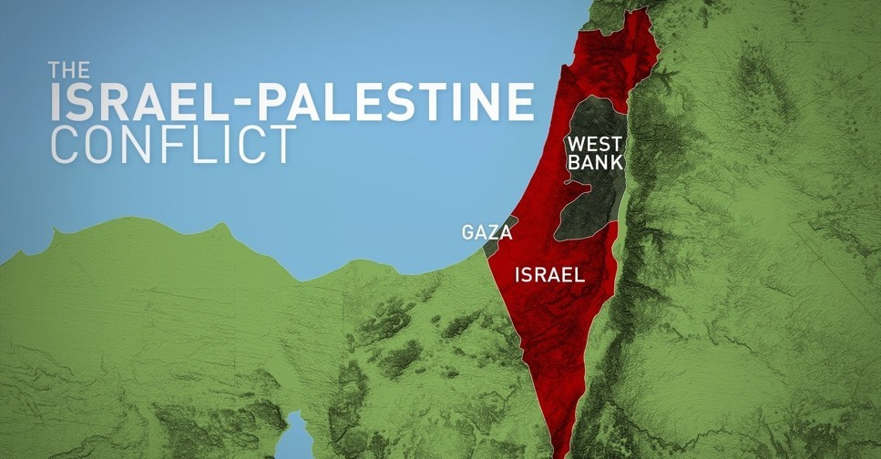

What is Censorship
-
- There is no international consensus concerning the borders, and many areas claimed by Palestinians have been occupied by Israelis for years.
The Palestinians
- The social geography of modern Palestine, especially the area west of the Jordan River, has been greatly affected by the dramatic political changes and wars that have brought this small region to the attention of the world. In the early 21st century, Israeli Jews constituted roughly half of the population west of the Jordan, while Palestinian Arabs—Muslim, Christian, and Druze—and other smaller minorities accounted for the rest. The Jewish population is increasingly composed of persons born in Israel itself, although millions of immigrants have arrived since the founding of the State of Israel in 1948. The Arab population is descended from Arabs who lived in the area during the mandate period and, in most cases, for centuries before that time. The majority of both Jews and Arabs are now urbanized.
Israel hISTORY
- We cannot talk about Palestine without talking about Israel. Israels history is quite new and started in the late 19th and early 20th century, by an organized religious and political movement known as Zionism which emerged among Jews. Zionists wanted to basically reestablish a Jewish homeland in Palestine. Massive numbers of Jews immigrated to the ancient holy land and built settlements. Around 1882 and 1903, about 35,000 Jews moved and relocated to Palestine. Then another 40,000 settled in the area between 1904 and 1914. Many Jews who were afraid of the Nazi, found refuge in Palestine and embraced Zionism. Right after the WW2, the Zionist participates focused on creating a all jewish independent state in Palestine.
- In 1947 the United Nations, created a plan to split or partition palestine to create a Jewish and Arab state, but of course the arab Palestinians rejected this. But then the next year in 1948, Israel was officially considered an independent state, which also begun a time for conflict between the two. Following the announcement of an independent Israel, five Arab nations—Egypt, Jordan, Iraq, Syria, and Lebanon invaded the region in what became known as the 1948 Arab-Israeli War. Countless wars followed after the 1948 war, but fast forward to Israel today, clashes are still common between israel and palestinians.
Two - state solution
- In recent years many countries, have proposed for a two state solution for the arabs and the jews. The Israeli Prime Minister has backed for a two state solution but has also been accused of encouraging Jewish settlements in Palestinian areas, which is considered illegal by the UN. Ultimatly the palestininas have refused a two state solution as they say they want there homeland back, nd israel continues to expand its annexation, which includes areas that were given to the palestinians